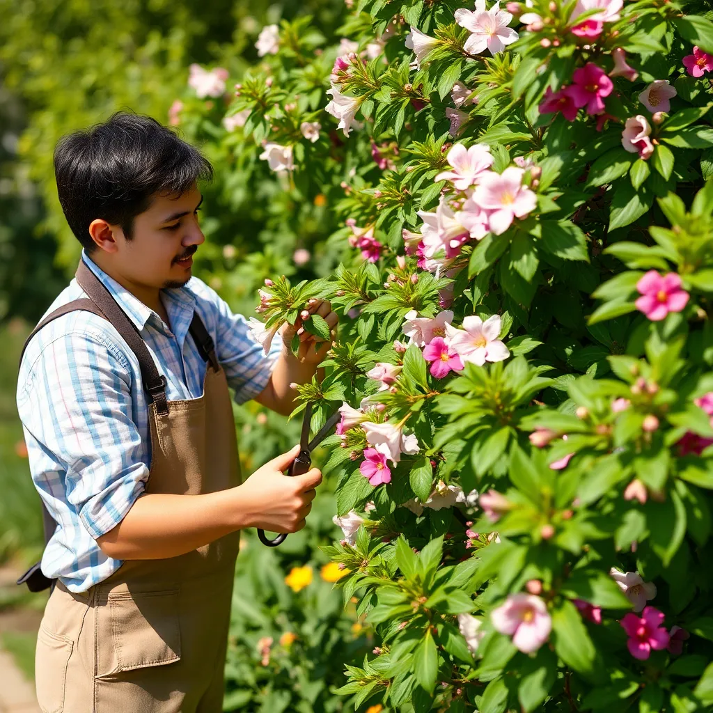
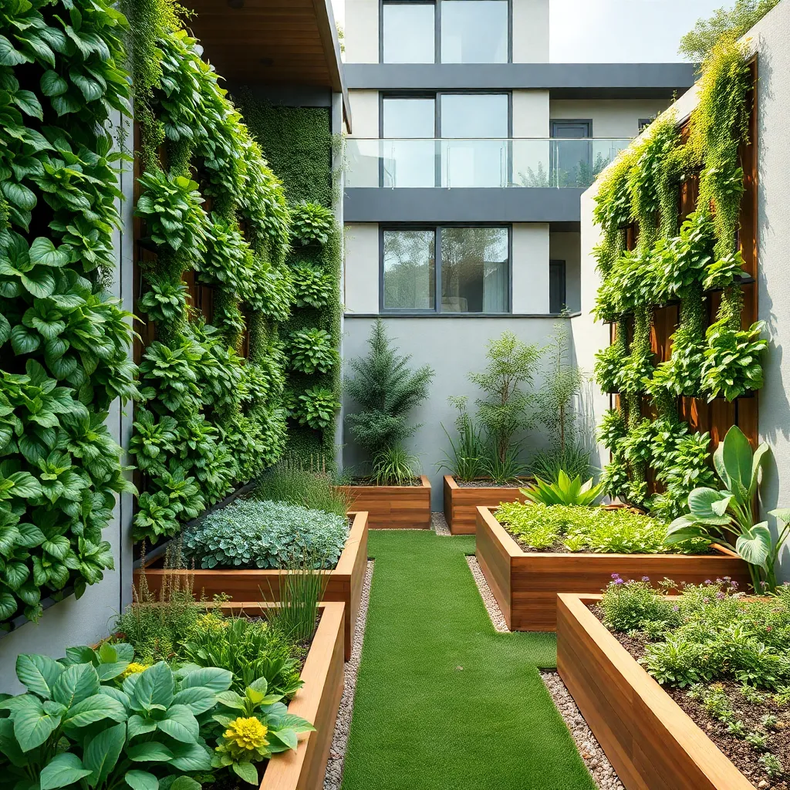

Pruning Basics: Understanding the Art and Science
Pruning is essential for the health, beauty, and productivity of plants. Whether you have flowering shrubs, fruit trees, or ornamental plants, knowing the correct pruning techniques will help you shape and sustain a beautiful landscape.
Correct pruning encourages growth, removes dead or diseased wood, and improves air circulation. The timing of pruning varies by plant species and climate, but the principles remain consistent: cut with purpose and care.
Typical pruning tools include pruning shears, loppers, and saws. Always keep tools sharp and clean to prevent plant damage and disease spread.
Seasonal Pruning Guide
Each season presents unique pruning opportunities tailored to plant types:
- Winter: Best for dormant trees and shrubs to shape form and remove damaged limbs.
- Spring: Ideal for flowering plants that bloom on new wood.
- Summer: Light pruning to maintain shape and remove spent blooms.
- Fall: Usually avoided but good for removing dead or diseased wood.
Sustainable Gardening Practices
Sustainability in gardening means nurturing the environment while cultivating beauty. Here are a few tips for an eco-friendly approach:
- Use organic fertilizers and compost to enrich soil health.
- Encourage beneficial insects and birds by planting native flowers.
- Practice water conservation with drip irrigation and mulching.
- Choose disease-resistant plant varieties to reduce chemical use.
Common Pruning Mistakes to Avoid
Even experienced gardeners can make mistakes. Avoid these common errors to keep your garden thriving:
- Over-pruning, which can stress plants and reduce blooming.
- Ignoring the natural shape and growth habit of plants.
- Pruning at the wrong time for the plant species.
- Using dirty or dull tools that damage plant tissue.
Pruning Tools Care and Maintenance
Keeping your pruning tools in top condition improves your work and plant health. Follow these steps:
- Clean your tools after each use with soap and water.
- Sharpen blades regularly to ensure clean cuts.
- Oil the joints and blades to prevent rust and stiffness.
- Store in a dry, safe place away from children.
Latest Garden Design Trends for 2025
Inspired by nature and driven by sustainability, these garden trends are shaping landscapes worldwide:
- Wildlife-friendly spaces: Gardens designed to attract and support local fauna.
- Edible landscapes: Combining aesthetics with productivity by growing fruits and vegetables.
- Vertical gardening: Maximizing space with wall-mounted planters and green walls.
- Smart irrigation: Technology integration for water efficiency.
Interview with a Pruning Expert
"Pruning is as much an art as it is a science. Understanding a plant’s natural habits allows us to enhance its beauty while ensuring its health and vigor." – Jane Doe, Master Gardener
Jane explains the importance of patience and observation in pruning. Learn from her practical tips and experience in our full video interview available on our website.
Your Essential Pruning Toolkit
Outfitting yourself with the right tools can make all the difference:
- Hand Pruners: For precise cuts on small stems.
- Loppers: For thicker branches and hard-to-reach areas.
- Pruning Saw: For larger branches that can't be cut with loppers.
- Safety Gear: Gloves, protective eyewear, and sturdy shoes.
Pruning Trees vs. Shrubs: What You Need to Know
While pruning principles overlap, trees and shrubs require tailored approaches:
- Tress: Focus on removing deadwood and shaping the canopy carefully.
- Shrubs: Typically pruned for shape and dense foliage growth, often more frequently.
- Always consider the growth habit and flowering cycle for each plant type.
Seasonal Plant Care Tips for a Healthier Garden
Regular seasonal maintenance keeps your garden flourishing year-round:
- Spring: Fertilize and start planting new seedlings.
- Summer: Monitor watering and pest control closely.
- Fall: Mulch and prepare plants for winter dormancy.
- Winter: Protect sensitive plants from frost and snow damage.